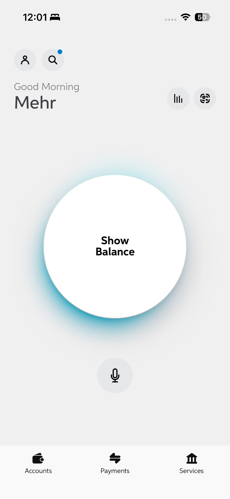
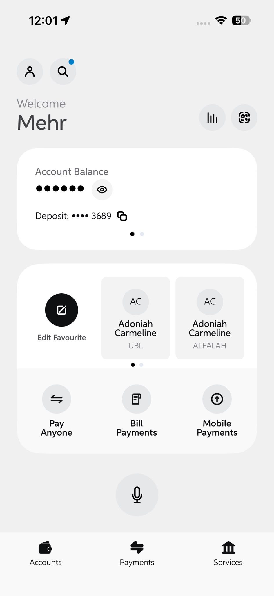

Shortening the path to simple transactions
Real product walkthrough, screen recorded.
UBL's original dashboard only did one thing well: show your balance. Everything else was buried behind menus. I redesigned the information architecture so the tasks customers actually reach for are one or two taps away.
The earlier dashboard had exactly one piece of functionality upfront: viewing your balance, hidden behind a tap to reveal circle. Every other everyday task, sending money, paying a favourite, checking a statement across accounts, required navigating into nested menus first. For a screen customers opened multiple times a day, that was a lot of friction for very little payoff.
I audited which tasks customers performed most often and rebuilt the information architecture around them, surfacing quick actions, favourites, and account switching directly on the home screen instead of behind a menu. The goal wasn't a visual refresh, it was making the fastest path to a common transaction as short as possible.


The redesigned dashboard surfaces the most used features directly on the home screen: balance, quick actions, and favourite payees. Adding a favourite and paying them takes a fraction of the taps it used to. Customers with multiple accounts can switch and pull a statement without leaving the flow.
Watch the walkthrough alongside.
Customers can now complete the transactions they perform most, checking a balance, paying a favourite, switching accounts, in half the taps the old dashboard required, without ever leaving the home screen.